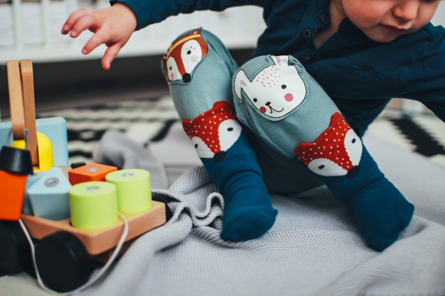

Leads Services Overview
Lead Foundation is a non-profit organization that receives funding from the Government and various sponsors. Lead specializes in helping children and their families work through fundamental challenges through play-based programs in their home, preschool and community Invalid source specified.
The Lead team helps children develop language, social, play and motor skills and works with children who have a mild speech, language, motor or social delays to children with more complex challenges Invalid source specified. Lead teams develop specialized plans for each family by interviewing the parents collecting a variety of information and setting goals and priorities for their child.
By using a developmental approach, Lead evaluates the child's current developmental skill level and uses different activities and strategies to encourage skill development/
A Lead team may include a Child Development Specialist (CDS), Occupational Therapist (OT), Speech and Language Pathologist (SLP), Psychologist/Program and Behavior Specialist (PBS), Clinical/Early Learning Coordinator and /or Physical Therapist (PT).